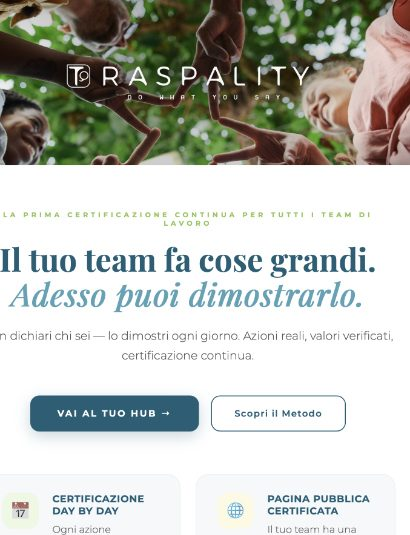

Traspality
Online in beta
Trasparenza e qualità in un unico strumento. Le imprese raccontano il proprio operato e, raccontandolo, lo certificano.
Al centro c'è l'identità: la qualità come carattere distintivo, non come standard uguale per tutti.
Entra in traspality.com ↗